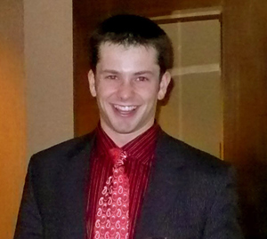

A native of Traverse City, I graduated from Saint Francis in 2003. Throughout high school, I worked for Blue Photo, and did senior portraits and weddings in my spare time. After high school, I followed my dream of becoming a personal trainer by completing the certification for American College of Sports Medicine Certified Trainer. While doing personal training, I attained a degree in Applied Science from Northwestern Michigan College in 2005. With a passion for understanding how a business works, I went back to school for a Bachelor's degree in Business through Ferris State University, which I completed in May of 2009. During the final years of college, I ran a full-time personal training business that held between 3-5 employees and carried the position of Operations Manager for a local business. Upon graduating, and with a passion to attain further real-world skills, I went to work for Ollar Consulting, where I attained a Quickbooks Proadvisor and Microsoft Certified Professional certification, as well as invaluable experience. Currently, I am dedicating most of my professional time to running the Formative Fitness Training Studio in downtown Traverse City.
How can Sebastian's ventures be of service to you?